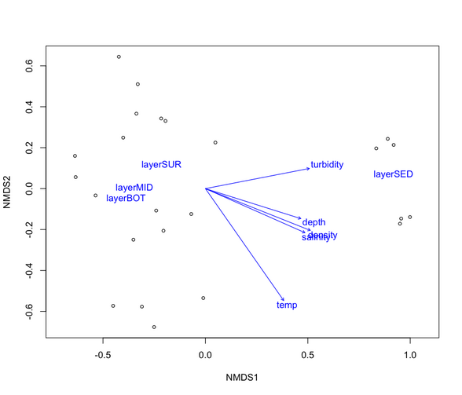
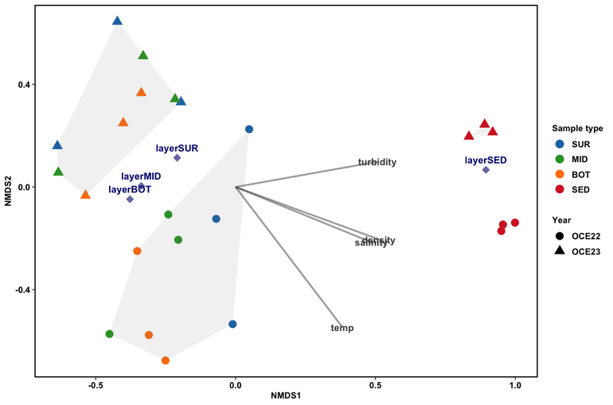
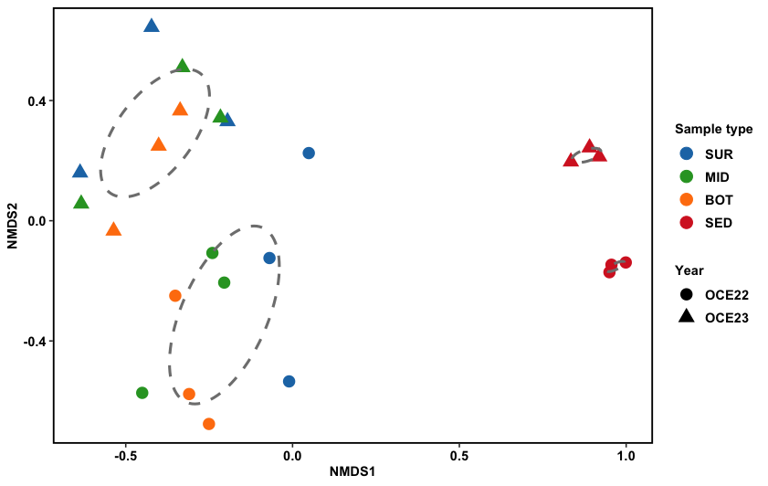

Date: July 01, 2025
To understand how environmental parameters or factors influence community structure, you can overlay environmental variables (or factors) onto ordination plots (i.e., NMDS, PCA, or CCA). There are several key functions in R that you can use across various packages. Below, I continued with NMDS and used envfit() and ordisurf() from the vegan package.
The envfit() function fits environmental vectors or factors onto an ordination space (e.g., NMDS).
It assesses how well environmental variables correlate with the ordination pattern.
To perform, we generally follow these steps using the vegan package:
# Load Required Packages
install.packages("vegan") # if not already installed
library(vegan)
#input dataset and turn abundance data frame into a matrix
com = read.csv("ASV_table.csv",row.names = 1, header= TRUE)
com <- as.matrix(t(com))
# Show first 5 rows and first 10 columns
com[1:5, 1:10]
> com[1:5, 1:10]
ASV1 ASV10 ASV100 ASV1000 ASV1001 ASV1002 ASV1003 ASV1004 ASV1005 ASV1006
OCE22_BL1_01 0 143055 7 0 1 0 2 0 0 3
OCE22_BL1_02 38639 18080 1481 518 103 0 7 0 4 251
OCE22_BL1_03 10686 23020 19225 0 88 0 2 0 39 44
OCE22_BL2_01 3195 346 0 0 0 0 69 0 0 7
OCE22_BL2_02 73508 18791 44 0 16 1 2 0 0 50
head(metadata)
station year year_layer layer depth salinity temp turbidity density shannon
OCE22_BL1_01 BL01 OCE22 OCE22_water SUR 5 6.58 4.405 2.12 5.245 3.077480
OCE22_BL1_02 BL01 OCE22 OCE22_water MID 25 7.72 3.947 0.69 6.260 4.402445
OCE22_BL1_03 BL01 OCE22 OCE22_water BOT 55 NA NA NA NA 4.869267
OCE22_BL2_01 BL02 OCE22 OCE22_water SUR 5 7.16 3.825 0.94 5.720 3.550806
OCE22_BL2_02 BL02 OCE22 OCE22_water MID 25 7.75 3.624 0.36 6.291 3.368631
OCE22_BL2_03 BL02 OCE22 OCE22_water BOT 45 7.85 3.741 0.58 6.466 4.180233
richness
OCE22_BL1_01 611
OCE22_BL1_02 1073
OCE22_BL1_03 1418
OCE22_BL2_01 586
OCE22_BL2_02 822
OCE22_BL2_03 908
# Select enviromental for envfit
en = metadata[ ,5:9]
> head(en)
depth salinity temp turbidity density
OCE22_BL1_01 5 6.58 4.405 2.12 5.245
OCE22_BL1_02 25 7.72 3.947 0.69 6.260
OCE22_BL1_03 55 NA NA NA NA
OCE22_BL2_01 5 7.16 3.825 0.94 5.720
OCE22_BL2_02 25 7.75 3.624 0.36 6.291
OCE22_BL2_03 45 7.85 3.741 0.58 6.466
set.seed(123) # For reproducibility
# Perform NMDS using Bray-Curtis distance
nmds = metaMDS(m_com, autotransform = FALSE, distance = "bray")
nmds
# Run envfit function
envfit_result = envfit(nmds, en, permutations = 999, na.rm = TRUE)
envfit_result
plot(nmds, type = "t", display= c("sites"))
plot(envfit_result)
> envfit_result
***VECTORS
NMDS1 NMDS2 r2 Pr(>r)
depth 0.95391 -0.30009 0.2513 0.064 .
salinity 0.91423 -0.40519 0.2974 0.030 *
temp 0.57279 -0.81970 0.4687 0.002 **
turbidity 0.98166 0.19066 0.2813 0.022 *
density 0.92886 -0.37042 0.3200 0.022 *
---
Signif. codes: 0 ‘***’ 0.001 ‘**’ 0.01 ‘*’ 0.05 ‘.’ 0.1 ‘ ’ 1
Permutation: free
Number of permutations: 999
***FACTORS:
Centroids:
NMDS1 NMDS2
layerSUR -0.2142 0.1168
layerMID -0.3460 0.0039
layerBOT -0.3873 -0.0489
layerSED 0.9185 0.0686
Goodness of fit:
r2 Pr(>r)
layer 0.677 0.001 ***
---
Signif. codes: 0 ‘***’ 0.001 ‘**’ 0.01 ‘*’ 0.05 ‘.’ 0.1 ‘ ’ 1
Permutation: free
Number of permutations: 999
2 observations deleted due to missingness
plot(nmds, type = "p", display= c("sites"))
plot(envfit_result)

The envfit results show how well environmental variables align with the NMDS ordination.
Conclusion: temperature and layers strongly influence community structure.
Next, we need to extract the data from the envfit results (with p value =< 0.05) and integrate it into the ggplot visualizations.
library(ggplot2)
library(ggrepel)
library(dplyr)
# Extract environmental vector coordinates and scale arrows for continuous variables only
en_coord_cont <- as.data.frame(scores(envfit_result, "vectors")) * ordiArrowMul(envfit_result)
# Extract factor centroids (categorical variables) without scaling
en_coord_cat <- as.data.frame(scores(envfit_result, "factors")) * ordiArrowMul(envfit_result)
# Extract p-values for continuous and categorical variables
cont_pvals_vec <- envfit_result$vectors$pvals
cont_pvals_fac <- envfit_result$factors$pvals
# Subset coordinates where p-value ≤ 0.05
en_coord_cont <- en_coord_cont[cont_pvals_vec <= 0.05, ]
en_coord_cat <- en_coord_cat[cont_pvals_fac <= 0.05, ]
p <- ggplot() +
geom_point(data = data.scores, aes(x,y, fill = year, color= layer, shape = year), size=4) +
scale_color_manual(values = layer_colors) +
geom_polygon(data=hull.data,aes(x,y, fill = "#8ecae6", group=year_layer),alpha=0.1) +
scale_fill_manual(values = layer_colors) +
labs(colour = "Sample type", shape = "Year" , x = "NMDS1", y = "NMDS2") +
theme(axis.text.y = element_text(colour = "black", size = 10, face = "bold"),
axis.text.x = element_text(colour = "black", face = "bold", size = 10),
legend.text = element_text(size = 10, face ="bold", colour ="black"),
legend.position = "right", axis.title.y = element_text(face = "bold", size = 10),
axis.title.x = element_text(face = "bold", size = 10, colour = "black"),
legend.title = element_text(size = 10, colour = "black", face = "bold"),
panel.background = element_blank(), panel.border = element_rect(colour = "black", fill = NA, size = 1.2),
legend.key=element_blank()) + geom_text_repel() + guides(fill = "none") +
geom_point(data = en_coord_cat, aes(x = NMDS1, y = NMDS2),
shape = "diamond", size = 4, alpha = 0.6, colour = "navy") +
geom_text(data = en_coord_cat, aes(x = NMDS1, y = NMDS2+0.04),
label = row.names(en_coord_cat), colour = "navy", fontface = "bold") +
geom_segment(aes(x = 0, y = 0, xend = NMDS1, yend = NMDS2),
data = en_coord_cont, size =1, alpha = 0.5, colour = "grey30") +
geom_text(data = en_coord_cont, aes(x = NMDS1, y = NMDS2), colour = "grey30",
fontface = "bold", label = row.names(en_coord_cont))
p

To visualize group boundaries in the NMDS plot, convex hulls can be calculated for each project (grouping by year_layer). The following code loops through all unique projects, ideal when working with many groups, computes their convex hulls based on NMDS coordinates, and combines the results for plotting.
# Initialize an empty list to store hull data for all projects
unique_projects <- unique(data.scores$year_layer)
hull.data <- list()
# Loop through each unique project to calculate convex hull
for (proj in unique_projects) {
# Subset the data for the current project
project_data <- data.scores[data.scores$year_layer == proj, ]
# Calculate convex hull for x and y coordinates
hull_data_proj <- project_data[chull(project_data[, c("x", "y")]), ]
# Add to the list
hull.data[[proj]] <- hull_data_proj
}
# Combine all hull data
hull.data_combined <- do.call(rbind, hull.data)
Alternatively, statistical ellipses (e.g., 95% confidence intervals) can be used to represent group dispersion. Ellipses are especially useful for highlighting group variance and overlap in a more interpretable.
# Structure of the NMDS scores data
head(data.scores)
x y name layer year station year_layer
OCE22_BL1_01 -0.01036411 -0.5345908 OCE22_BL1_01 SUR OCE22 BL01 OCE22_water
OCE22_BL1_02 -0.45061477 -0.5727449 OCE22_BL1_02 MID OCE22 BL01 OCE22_water
OCE22_BL1_03 -0.25058178 -0.6762154 OCE22_BL1_03 BOT OCE22 BL01 OCE22_water
OCE22_BL2_01 0.04866255 0.2251504 OCE22_BL2_01 SUR OCE22 BL02 OCE22_water
OCE22_BL2_02 -0.20485165 -0.2058123 OCE22_BL2_02 MID OCE22 BL02 OCE22_water
OCE22_BL2_03 -0.35158836 -0.2495884 OCE22_BL2_03 BOT OCE22 BL02 OCE22_water
# Function to calculate ellipse coordinates from covariance matrix
veganCovEllipse <- function (cov, center = c(0, 0), scale = 1, npoints = 100) {
theta <- (0:npoints) * 2 * pi / npoints
Circle <- cbind(cos(theta), sin(theta))
t(center + scale * t(Circle %*% chol(cov)))
}
# Ensure 'year_layer' is treated as a factor
data.scores$year_layer <- as.factor(data.scores$year_layer)
# Initialize empty data frame to store ellipse coordinates
df_ell <- data.frame()
# Loop through each group and calculate its ellipse
for (g in levels(data.scores$year_layer)) {
subset_data <- data.scores[data.scores$year_layer == g, ]
cov_data <- cov.wt(cbind(subset_data$x, subset_data$y), wt = rep(1 / nrow(subset_data), nrow(subset_data)))
ellipse_coords <- veganCovEllipse(cov = cov_data$cov, center = c(mean(subset_data$x), mean(subset_data$y)))
ellipse_df <- as.data.frame(ellipse_coords)
colnames(ellipse_df) <- c("x", "y")
df_ell <- rbind(df_ell, cbind(ellipse_df, year_layer = g))
}
# Plot nMDS using ggplot2
p <- ggplot() +
geom_point(data = data.scores, aes(x,y, fill = year, color= layer, shape = year), size=4) +
scale_color_manual(values = layer_colors) +
scale_fill_manual(values = layer_colors) +
labs(colour = "Sample type" , shape = "Year", x = "NMDS1", y = "NMDS2") +
theme(axis.text.y = element_text(colour = "black", size = 10, face = "bold"),
axis.text.x = element_text(colour = "black", face = "bold", size = 10),
legend.text = element_text(size = 10, face ="bold", colour ="black"),
legend.position = "right", axis.title.y = element_text(face = "bold", size = 10),
axis.title.x = element_text(face = "bold", size = 10, colour = "black"),
legend.title = element_text(size = 10, colour = "black", face = "bold"),
panel.background = element_blank(), panel.border = element_rect(colour = "black", fill = NA, size = 1.2),
legend.key=element_blank()) + geom_text_repel() + guides(fill = "none") +
geom_path(data = df_ell, aes(x = x, y = y, group = year_layer, color = year_layer), size=1, linetype=2)
p
